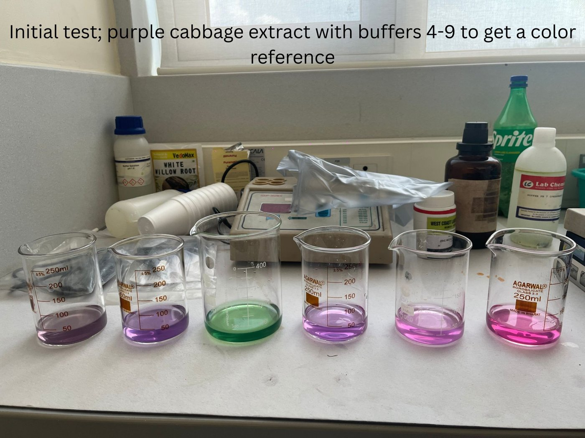
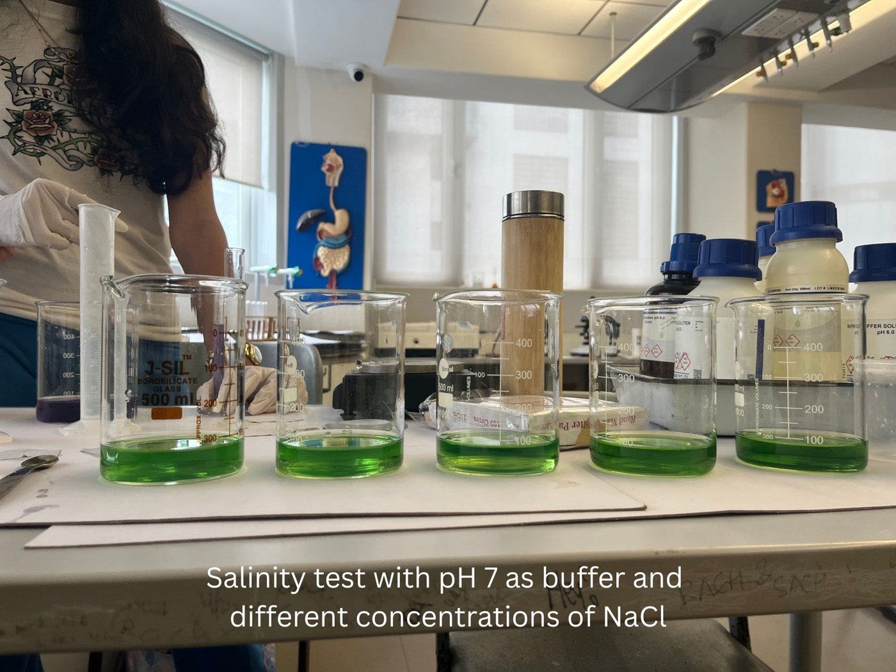
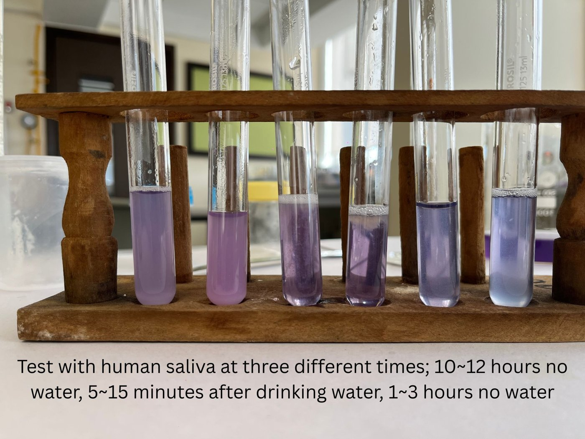
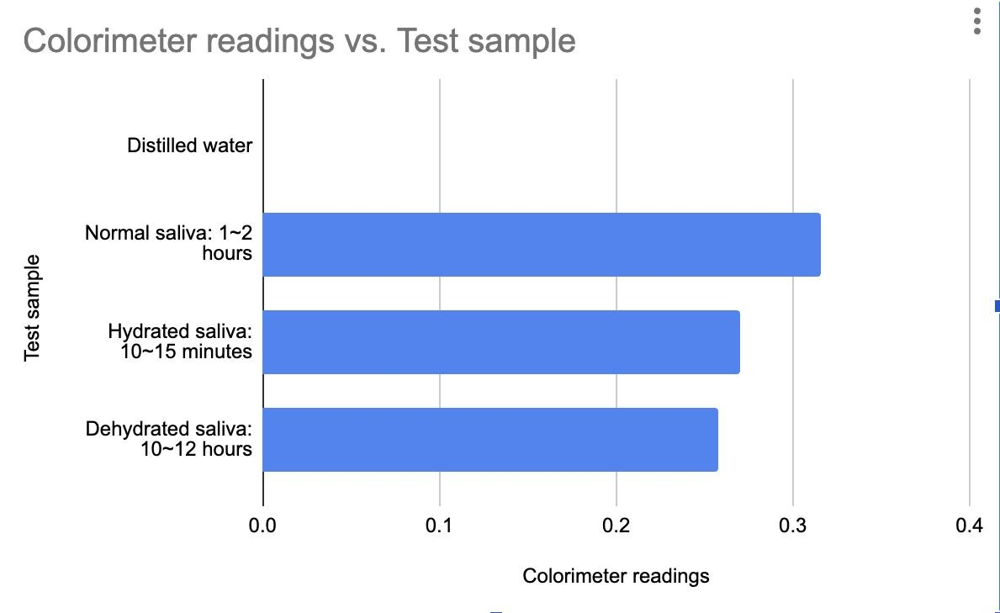

Methods and results
How the purple cabbage indicator was tested, what the first experiment showed, and how this site turns a photo of a strip into a hydration reading.
Aim and principle
The project asks whether a cheap colour indicator, wetted with saliva, can give a useful estimate of hydration. Saliva contains bicarbonate, which buffers its pH. When a person is short of water, salivary flow drops and less bicarbonate is carried into the mouth, so saliva is expected to become slightly more acidic. A pH-sensitive indicator should therefore shift colour with hydration state.
Indicator
The indicator is purple cabbage extract. Its colour comes from anthocyanins, natural pigments that change colour with pH: pink and red in acid, purple near neutral, and blue to green as conditions become alkaline.
Step 1: colour reference in buffers
To see the range of colours the extract produces, it was added to buffer solutions from pH 4 to pH 9 in six beakers.

This confirms that the extract changes colour visibly across the pH range of interest. Because the beaker order is unknown, the hue to pH curve used by the site is an approximation anchored to the general behaviour of anthocyanins and to the saliva trial, not a calibration from this photo.
Step 2: salinity test
Saliva also changes in salt content, so it was important to check whether salt alone moves the indicator colour. A pH 7 buffer was prepared with different concentrations of sodium chloride (five beakers) and the extract added to each.

All five beakers appeared the same green. In this test, salt concentration alone did not visibly shift the indicator colour, which supports reading the strip colour as a pH signal rather than a salinity signal.
Step 3: saliva at three times
Saliva was collected from one person at three points: after 10 to 12 hours without water, 5 to 15 minutes after drinking water, and after 1 to 3 hours without water. Each sample was mixed with the extract in two test tubes, giving six tubes in total.

The site measured the colour of each tube from this photo: the image was white-balanced, the hue was taken in HSV, and the two tubes for each condition were averaged.
| Condition | Average colour | Average hue | Individual tubes |
|---|---|---|---|
| 10-12 h without water | #735a78 | ~291° | ~281°, ~299° |
| 5-15 min after drinking | #5b4963 | ~282° | ~285°, ~280° |
| 1-3 h without water | #7a7698 | ~246° | ~256°, ~239° |
A higher hue here means a pinker, more acidic colour; a lower hue means bluer. These values were measured from a phone photo of test tubes, not from strips, so they depend on the lighting, the camera and the depth of liquid. They are used by the site only as starting reference colours, which can be replaced with a user's own calibration.
Step 4: colorimeter readings
The same kinds of samples were measured with a colorimeter. The original bar chart is shown below, followed by the values read from it.

Distilled water read 0. Normal saliva (1-2 h) read about 0.32, hydrated saliva (10-15 min) about 0.27, and dehydrated saliva (10-12 h) about 0.26.
The time labels do not match exactly between the two records. The colorimeter chart describes the normal sample as 1-2 hours and the hydrated sample as 10-15 minutes, whereas the photo caption for the test tubes gives 1-3 hours and 5-15 minutes. Both are reported here as recorded; it is not known which is correct.
Interpretation
The most acidic, pinkest colour came from the sample taken after the longest period without water (10-12 hours). That is consistent with the principle above: lower salivary flow carries less bicarbonate, so saliva is less well buffered.
The results are not yet a clean, ordered scale. The sample taken just after drinking sat closer in hue to the dehydrated sample (~282° vs ~291°) than to the 1-3 hour sample (~246°), and the colorimeter did not clearly separate dehydrated saliva from saliva taken just after drinking (about 0.26 vs 0.27). The ordering is therefore not monotonic: drinking water did not simply move the colour towards the "well hydrated" end.
There were only two samples per condition, all from one person, so none of these differences can be called significant. This is the reason the site includes study mode (to collect labelled readings with an independent hydration measure), the printed reference card (to correct the colour of every photo) and the dry control pad (to cancel out batch-to-batch differences in the strips).
From photo to reading
- Card detection and colour correction. The site looks for the printed reference card by its four black corner squares, maps the card geometry onto the photo, and uses the white, grey and black areas to correct the colours for lighting and camera. If no card is found, it falls back to a simpler white-balance correction, which is less reliable.
- Control pad compensation. With the card, the dry control pad is measured as well as the wet test pad. The hue shift between the wet test pad and the dry control pad is used to compensate the test hue, so differences between strip batches and lighting matter less.
- Hue to pH. The corrected hue is converted to an estimated saliva pH using a piecewise curve for anthocyanin colour.
- Hue to score. A 0 to 100 hydration score is found by interpolating between the three reference colours from the saliva trial (or the user's own calibration).
- Bands. The score is placed in a band: below 30 Dehydrated, 30 to 50 Mildly dehydrated, 50 to 75 Hydrated, above 75 Well hydrated.
- Personal baseline. Readings marked as baseline readings build a personal average: the mean of the last 10 baseline readings, available once there are at least 3. New readings are compared with this average as well as with the fixed bands.
- Learned model. Once at least 12 readings have an independent label (urine colour or hours since drinking), a logistic regression model can be trained on the corrected colours. Its accuracy is measured by cross-validation and compared with the colour rule and with always guessing the most common label. It is only used if the user chooses to save it.
Limitations and next steps
- Sample size. Two samples per condition from one person cannot show a reliable effect. A larger study, with more people and repeated readings per person, is needed.
- Independent measure of hydration. The conditions in this experiment were defined only by time since drinking. Future readings should be paired with an independent measure, such as urine colour on a standard chart or change in morning body mass.
- Controlled strip manufacture. The extract concentration, the paper and the drying method all affect colour. Strips need to be made in a consistent, documented way, with a dry control pad on every strip.
- Imaging conditions. Hue values were taken from a phone photo of test tubes. Strips photographed on the reference card should be far more consistent, and this needs to be checked.
- Blinded testing. The person reading or labelling the strip should not know the hydration condition, so expectations cannot influence the result.
- Confounders. Food, acidic drinks, tooth brushing and illness also change saliva pH. The site records these as context tags, and the testing protocol asks for 30 minutes without food or drink first.
Your data so far
Read live from the readings saved in this browser. Nothing here is sample or example data.
Loading your data...